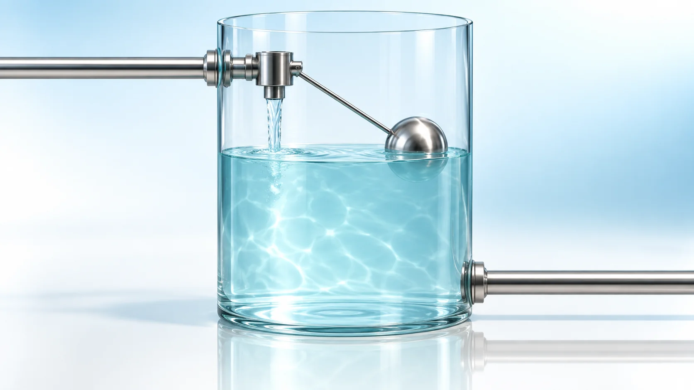
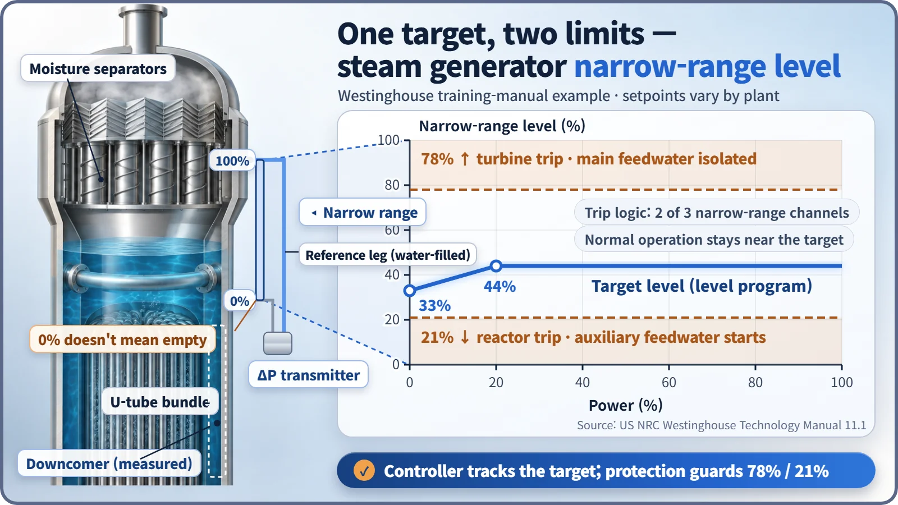
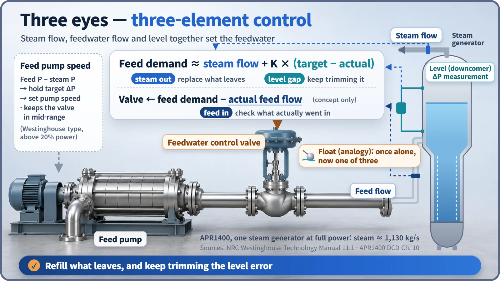

Plant Operation, Control & the Grid · 244
A Toilet-Tank Float Won't Cut It — The Three Eyes of Steam Generator Level Control
A float watches only the level. A steam generator controller watches steam flow, feedwater flow and level together, and protection lines guard both ends.

A steam generator loses about 1.1 tonnes of water a second as steam at full power, so its level controller cannot simply wait for the level to drop. It watches three things at once, steam flow, feedwater flow and level, and stands apart from protection limits that trip the turbine or reactor if the level goes too high or too low. [1]
A toilet-tank float won't cut it
The round float in a toilet tank is a dependable automatic controller: flush, the level drops, the float drops and opens the fill valve; the water rises and the float closes it. It measures exactly one thing, the water level.
But imagine that tank with a hole draining more than a ton of water every second, nonstop. By the time the float noticed it had dropped, it would be too late. A nuclear plant's steam generator is exactly that kind of tank.
A tank with 1.1 tonnes a second passing through
In a pressurized water reactor, the steam generator is a giant heat exchanger. Primary coolant from the reactor enters a hemispherical chamber at the bottom, runs through thousands of U-shaped tubes and leaves again. The secondary water outside the tubes absorbs that heat and boils, and the steam exits at the top to spin the turbine.
In South Korea's APR1400, each steam generator sends out about 4.07 million kg of steam per hour at full power, about 1.1 tonnes per second, and the same amount must be replaced with feedwater. Steam generator level control is automatic control that feeds in as much water as leaves as steam, holding the secondary water level near its target:
Change in water inventory = feedwater in − steam out [3]
Where is the level measured, and what does 0% mean?
The tube bundle is full of bubbles, so level is measured in the ring-shaped passage around it, the downcomer, where incoming feedwater flows down as almost pure liquid. The instrument compares the pressure of the downcomer water column with a reference pipe that is always full, and converts the difference to a height. Normal control uses a narrow-range level that shows only a band of a few meters above the top of the tube bundle as 0 to 100%; in US Westinghouse-type training material, about 3 to 4 m. [2]
0% narrow-range level does not mean the steam generator is empty. The bottom of the scale sits above the tube bundle, with a great deal of water below it.
Too high is bad, too low is bad
Too high, and the moisture separators at the top are flooded; droplets ride with the steam into the turbine and wear away the fast-spinning blades like grains of sand. The APR1400 is designed for 0.25% or less moisture by weight in its steam. Too low, and there isn't enough water to take the reactor's heat: the steam generator is where the reactor's heat leaves. [3] [4]
So automatic protection lines sit at both ends. In the Westinghouse-type example, if two of three narrow-range channels exceed 78%, the turbine trips and main feedwater is isolated; if two fall below 21%, the reactor trips and auxiliary feedwater starts. The APR1400 also has high and low level trips for each steam generator, with plant-specific setpoints.
Even the target moves: it rises from 33% at no load to 44% at 20% power, then stays at 44%. This curve is the level program. [1]

Three eyes instead of a float
Level is a result: when more steam starts leaving, the level instrument takes time to show it, while the inventory is already falling. So each steam generator's controller watches three signals, three-element control:
- Steam flow: how much is leaving right now, a leading signal that warns before the level changes.
- Feedwater flow: how much is actually going in, confirming the command was carried out.
- Level: how far it is from the target, correcting the remaining difference.
Feedwater demand ≈ steam flow + K × (target level − actual level)
K converts a level difference into a flow: put in as much as leaves, and add or subtract a little for the height that is short or over. When steam flow rises, feedwater rises before the level drops.
Two hands turn the command into water. The main feedwater control valve on each steam generator changes its opening with air pressure. The main feedwater pump speed, in the Westinghouse type above 20% power, holds the pressure difference between the feedwater and steam lines at a target set by steam flow, so the valve works near mid-opening, where control is most effective. At low power, designs often use a small bypass feedwater valve. [1]

What a float can't do
Steam generator level control has three layers: a target level that moves with power, a three-element controller that watches steam, feedwater and level together, and high and low level protection lines that stand apart from the control. The controller guards the target line; the protection system guards the end lines.
And because the water is boiling, drawing more steam suddenly makes the bubbles swell, so the level can briefly read higher, the wrong way. That "shrink and swell" effect is one more reason level alone can't be trusted, and a story for another time.